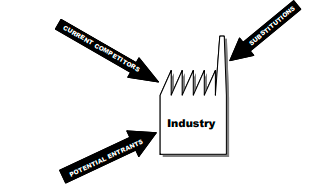
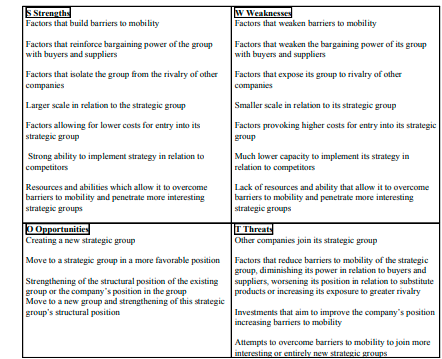

Tzu, S. (1983). A arte da guerra. Adaptação de James Clawell. Editora
Record, Rio de Janeiro.
As in any game, the success of competitive strategies depends on knowing the
rules as well as the other players. Nevertheless, in the real competitive
environment, the rules are not always clear and can change very quickly,
demanding quick responses and making it increasingly difficult to map the
moves of the main players.
Strong monitoring channels must be maintained to follow changes in the
competitive environment and to discern new trends. Changes in the environ-
ment can result from emerging technologies or changes in society’s behavior,
and thus in clients’ demands. They can also be the result of competitors’ moves
in the market.
Thus developing a good competitive strategy depends on mapping the environ-
ment and constantly monitoring it to be able to capitalize quickly on opportun-
ities or neutralize threats.
The focus of this chapter is on mapping the environment. It will show the main
aspects of the model for industry analysis and explain the process of forming
strategic groups and pressure maps.
Porter (1979) developed a model to analyze the environment based on
mapping five competitive forces in order to better understand the rules of the
competitive game and to help companies to find a position in the industry with
greater clarity. During the 1990s, it was often remarked that environmental
analysis had little to contribute given the turbulent state of the new economy, but
Porter (2001) was able to demonstrate how important environmental analysis
is, especially when there are a large number of uncertainties.
A good map is most useful during a storm!
To develop a map of an industry, one needs to know how the main players
behave and how the battle for greater profitability works. According to Porter
(1979), there are five competitive forces that run through an industry: custom-
ers, suppliers, current competitors, new entrants, and substitute products or
services.
Understanding these five forces is vital to formulating a company’s competitive
strategy. The model for Industry Analysis is shown in Figure 2.1.
The pressures exercised by these forces are structural determinants both of
competition and of an industry’s profitability (Porter, 1979). In Figure 2.1, the
battle for profitability in the supply chain, i.e., the bargaining power of
Figure 2.1. The five competitive forces (adapted from Porter, 1979)

customers and suppliers is laid out along the horizontal axis. The relationship
among competitors, whether those are already established, potential entrants,
or substitute products, is shown along the vertical axis.
It is important to emphasize that industry, in this context, means an industrial
sector and not a single company.
The structure of an industrial sector depends on how the competitive forces are
configured. When they are stronger, there is less potential for profitability. It is
easy to imagine that within an industry with fierce competition, the rate of return
tends to be less. On the outside limit, an industrial structure with all five forces
intensified, approaches the economic model of “perfect competition.”
On the other hand, there are industries where the five competitive forces are
weak, i.e., the rivalry among existing competitors is not intense, the entry
barriers for new competitors are difficult to overcome, and there are no
substitute products. Allied to this favorable scenario, the sector is the driver of
the supply chain, with high bargaining power with the others tiers in the chains,
whether customers or suppliers. This type of industrial sector is called “five
star” since it shows a high potential for profitability.
Industry analysis allows us to identify which competitive forces most influence
the industrial sector. It is common for one force in the competitive industrial
environment to stand out and the competitive strategy should focus on it. It is
then possible to influence the competitive environment in such a way as to
assume a strategic position that can neutralize it, and thus to obtain a sustainable
competition advantage, as seen in Chapter I.
It is worth emphasizing that the map of the sector structure is dynamic, since the
industry can undergo changes and, depending on the magnitude of the competi-
tive movement of each player, the shape of the five forces can be altered, having
an impact on its attractiveness.
Bargaining power in the relationship with customers and suppliers has a
decisive impact on both an industry’s profitability and attractiveness. Imagine
the vehicle assembly plants and their auto parts suppliers seated around the
bargaining table. It is east to predict that the scale will tilt toward the side of the
assemblers.
When the customers are concentrated and direct large volumes, such as the
case of the assembly plants, they manage to bargain for better prices, increasing
demands for quality, flexibility in the product mix and the volume of production,
as well as access to information via Integrated Management Systems — ERP.
They thus diminish the industry’s freedom to establish its own rules. This
situation is aggravated when the products supplied by the industrial sector are
standardized, are not critical to the quality of the customers’ production, and
can be substituted without generating costs for the change (Carvalho et al.,
2003).
Table 2.1 shows some aspects, which determine the bargaining power of an
industry, tilting the balance when they are present.
When the forces in the supply chain are intense, it is important to outline a
strategy for buyers and suppliers, with criteria for choosing buyers and for
selecting target customers and also for developing a buying strategy, paying
attention to strategic aspects and not just operational ones.
This matrix proposed by Cox et al. (2001) is a useful tool for analyzing
bargaining power between buyers and suppliers. Figure 2.2 shows the matrix,
where the horizontal axis shows the dominance of the supplier and the vertical
shows the dominance of the buyer, and four quadrants: buyer dominance,
interdependence, independence, and supplier dominance.
The quadrants of buyer dominance and supplier dominance indicate who has
power over the other. In the independence quadrant, buyers and suppliers have
attributes of power, and both must be involved in order to carry out any agreed
upon exchanges. In the independence quadrant, neither of the two have
attributes of power, nor are they capable of demanding that the other fulfill their
requirements, and both have other opportunities for doing business.
Table 2.1. Analysis of customer and supplier bargaining power
| Customers | Suppliers |
|---|---|
| Customers are concentrated or make large volume acquisitions | Supplier product is a critical input. It is unique or differentiated. |
| Purchases represent a significant part of their costs. | The group of suppliers is dominated by few companies and is more concentrated than the industry being analyzed |
| The industry’s products are standardized and/or are not important for the customers´ product quality. | The industry analyzed is not an important customer for the group of suppliers |
| The customers have all the information | The suppliers’ products are differentiated and do not compete with substitute products. |
| The customers represent a concrete threat of backward integration. | The suppliers are a concrete threat of forward integration |
Figure 2.2. Buyer supplier power (adapted from Cox et al., 2001)
Yet in the more complex supply chains, a more detailed analysis of the
relationship among the links must be done. It is necessary to identify which link
commands the chain, i.e., dominates the strategic activities which add value.
Two aspects take on special importance in this analysis, as we will see in more
detail in Chapter III — governance of the chain and the value system
Competition in a given industry can be a factor that significantly limits profitabil-
ity. In an industry with an intense rivalry, this can lead to predatory actions,
eroding the attractiveness and profitability of the industry as a whole.
It is important to note that rivalry should not be analyzed just in the context of
existing competitors, but also in the extended rivalry which includes new
entrants and substitute products and services, as illustrated in Figure 2.3. In
industries that are threatened by substitute products or have a high potential for
new entrants, competition tends to be sharper and often sets off price wars
There are many aspects that have an impact on the rivalry among established
competitors in an industry and in the battle for market share and better
competitive positioning. Imagine, for example, a sector where growth is slow
or stagnant! For a company to grow, it has to take market shares from the
Figure 2.3. Forces of competition: competitors, entrants and substitutes
competitors, increasing rivalry among the established competitors, which is not
the case when the industry is growing overall.
The main points to be verified in analyzing the forces of competition are:
When rivalry is extensive, the threat of new entrants to an industry is strongly
related to the effective entry barriers and the expectation of potential competi-
tors regarding retaliation from already established players.
The main source of entry barriers for new competitors is the economies of
scales, whether for production, research, marketing, or services, which require
that the entrant operate on a large scale or which place the entrant at a cost
disadvantage. In addition to this barrier, there are cost disadvantages, which
are independent of scale, such as patent costs, access to raw material, location,
official subsidies, and learning curves. For a long time, Xerox took advantage
Figure 2.4. Factors affecting the learning curve (adapted from Heizer and
Render, 1999)
of its patent for the copying machine to remain all alone in the market, however,
when the patent expired, a lot of entrants such as Canon, Hewlett Packard, and
others came on the scene.
According to Heizer and Render (1999), learning curve models were first
observed for the aeronautics industry. It has been calculated that for the period
1925-1957, the number of worker-hours per unit was reduced by 80%.
Learning curves, when applied to the context of strategy, allow us to determine
changes in the volume-cost trade-off, and to evaluate performance for the
business and the industry. The major restrictions to these models are related to
the wide range of variables, which need to be analyzed, as illustrated in Figure
2.4.
Other important sources of barriers are:product differentiation, capital
requirements, change cost and access to distribution channels
The threat of new entrants can also affect expectations regarding retaliation
from already established competitors, especially when excess capacity and/or
capital are available to maintain and sustain a direct battle.
Finally, the last force of competition to be analyzed is the pressure of substitute
products/services. Substitutes can be defined as those which carry out the same
function, even with another technology base (another industry). Substitutes,
which are subject to price/performance, trade off with products from the
industry and/or those produced by five-star industries merit the most attention.
As we saw earlier, even though all the companies within an industry are subject
to the same forces of competition, they adopt different strategic positions with
different results. Therefore, the analysis of the overall industry can be deep-
ened, extending to a structural analysis within the industry
The steps for doing a structural analysis inside the industry are:
The breadth of different strategies throughout an industry depends on the nature
of the industry. The choice of strategy has repercussions in the strategic
dimension, which demands trade-offs. According to Porter (1987) the follow-
ing dimensions can be identified:
Strategic groups allow clustering the firms in groups of similar companies,
consisting in an analytical tool that makes easier the industry’s analysis.
Strategic-groups method assumes that similar firms react similarly in the some
external disturbances (Feka et al., 1997).
Strategic groups cluster firms in groups of similar companies, forming an
analytical tool that makes it easier to analyze the industry. The strategic-group
method assumes that similar firms react in a similar way to external disturbances
(Feka et al., 1997). While the company should stake out a singular position, it
is possible to identify strategic groups that are following the same or a similar
strategy within an industry (see the section titled Dimensions of Competitive
Strategy). These strategic groups usually diverge in their approaches to the
product or to marketing. Even though there could be cases of a single strategic
group in an industry, these are rare.
An industry’s historical development explains differences in strategy and the
barriers to mobility, which follows the players’ different resources and poten-
tials, as well as their differences in terms of goals and positioning with regard
to risk. This leads to the formation of strategic groups within the industry. Yet,
changes in the industry’s structure can facilitate the formation of new strategic
groups or make the groups homogenous.
Strategic groups affect the barriers to mobility, bargaining power up and down
the supply chain, the threat of substitutions and rivalry within the industry.
Global barriers to entry differ greatly depending on the specific strategic group
the newcomer intends to join, as well as creating barriers to changes of position
from one strategic group to another. These barriers to mobility end up
discouraging changing strategic position. High barriers explain differences in
profitability between companies.
Strategic groups can also affect bargaining power in the chain, since they confer
different degrees of vulnerability on common buyers and suppliers. Strategic
groups permit one to focus on different parts of the product line, to serve
different customers, to operate with different levels of quality and technological
innovation, and to have different cost positions, minimizing the level of exposure
to competition from substitute products
The presence of several strategic groups almost always affects the level of
rivalry inside the industry, since there can be interdependence among the
groups in the market or in their degree of overlap in targeting customers. The
possibility of product differentiation achieved by the groups, the number and
relative size of the strategic groups, strategic distancing between groups, or the
degree of divergence of strategy are other factors that have impact on the global
rivalry of the industry.
A company’s viability, as a function of its chosen strategic group, is affected by
the structural analysis within the industry, as we have seen. Still, other factors
affect the profitability of a company or group, such as the position of the
company inside its group, the degree of competition within the group, the scale
of the company in relation to others in the group, the cost of entry into the group,
and the company’s ability to execute and implement its chosen strategy in
operational terms.
It is worth stressing that it is not always true that a company with a larger market
share is more viable. Larger companies will be more viable if they compete in
strategic groups more protected by barriers to mobility and with a stronger position
in the chain, and the smaller companies will be more viable if there are no large
economies of scale and if they adopt differentiated strategies for service and
technological innovation. This exception should not be taken as a rule, since that
could lead to a commodity trap. The view that cost position is the sole sustainable
factor on which a competitive strategy can be built, which can invade the territory
of other areas of strategy, is not easily sustainable, an, in global low-cost positioning,
is not always necessarily important.
The analysis and choice of which strategic groups one should compete in has
implications in formulating strategy. Hence, these decisions have to take into
consideration the comparison between a company’s strengths and weak-
nesses, whether they are structural or related to implementing the selected
strategy, and they must highlight distinctive competencies in order to maximize
opportunities and minimize threats arising from the competitive environment.
The SWOT analysis seen in Chapter I, allows us to visualize the impact of
strategic groups on strategy in a structured way as illustrated in Table 2.1.
The map of strategic groups presents a graphic demonstration of competition
in an industry, identifying the relative position of the diverse adversaries within it.
The map of strategic groups is laid out along two axes, which contain the critical
dimensions for industry analysis, usually dealt with at two levels, high and low,
as illustrated in Figure 2.5. Hence, the first step in mapping is to select the
strategic variables that will be used along the axes. In order to do so, one needs
to decide which variables determine the most important barriers to mobility for
the industry.
An analysis using maps of the strategic groups permits:
Table 2.1. SWOT analysis and strategic groups
Figure 2.5. Division of the industry in homogeneous groups (adapted from Scaranello, 2004)
Feka et al. (1997) state that total revenue can measure the size of each
company, while its business focus can be seen in the percentage of sales in
relation to the company’s total revenue. The market share of the analyzed
company’s product in relation to its competitors determines its market posi-
tioning. However, it is important to stress that other measurements could be
used to represent better the competitive environment in a specific industry.
Another instrument to map the competitive environment is the competitive
pressure diagram (D’Aveni, 2002). According to this author: “The more two
firms’ products or geographic markets overlap, the more pressure they exert
on each other. The pressure is proportional to the importance of markets to
each firm and their degree of penetration. This simple concept enables
organizations to quantify the degree of pressure that one rival puts on another.”
As D’Aveni writes, pressure systems can never be frozen; the best that can be
achieved is a kind of ‘dynamic stability’.
D’Aveni (2002) states that the competitive pressure from a given incursion into
a rival’s geographical or product market can be measured by two factors: the
importance of the market (I.M.) and the size of the incursion (S.I.). This
pressure is given by the formula:
Competitive Pressure = I.M. S.I. (1)
Where:
Similarly, to the strategic groups, the pressures map is valid just for a short period.
In this diagram, each circle represents one of the market players and arrows
represent the pressure each player is exercising on the others. The diameters of the
companies’ representative circles mean the size of the respective market share at
that moment. The width of the arrows in the diagram indicates the intensity of the
pressures.
These pressure maps can be also useful to take decisions about, offensive or
defensive moves, in conjunction with other decision-making tools like the
rivalry matrix, decision trees, and Game Theory. However, Furrer and Thomas
(2000) warn that the analyzed market should have few decision variables and
a predictable environment.
In both kinds of competitive environment maps, data about the market should
be obtained from secondary sources in order to construct these diagrams.
Identifying the competencies a company needs in order to gain competitive
advantage in a market which is in constant mutation is an arduous task.
However, the capacity for knowing its potential and developing it in a consistent
way can be decisive for a successful positioning on the competitive scene.
As we saw in Chapter I, self-knowledge propounded by Sun Tzu and other
philosophers is a decisive weapon in the competitive game.
The focus of this chapter is to discuss how a company should position its
competitive strategy in order to maximize its competencies, but without losing
sight of the competitive state of the industry overall.
The word competence comes from the Latin, competere. The derivation of the
concept of competencies can be seen by taking apart the Latin word:com,
which meanstogether and petere, which means effort. Identifying the set of
forces that will be able to lead the organization to build a sustainable competi-
tive advantage is vital in the context of strategy. (Rabechini Jr. & Carvalho,
2003).